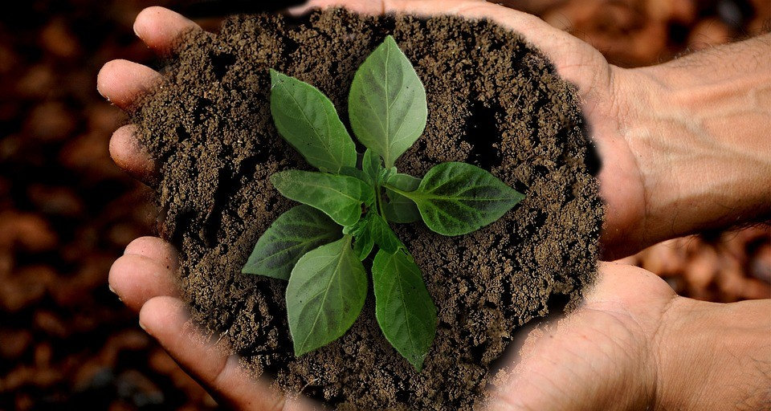
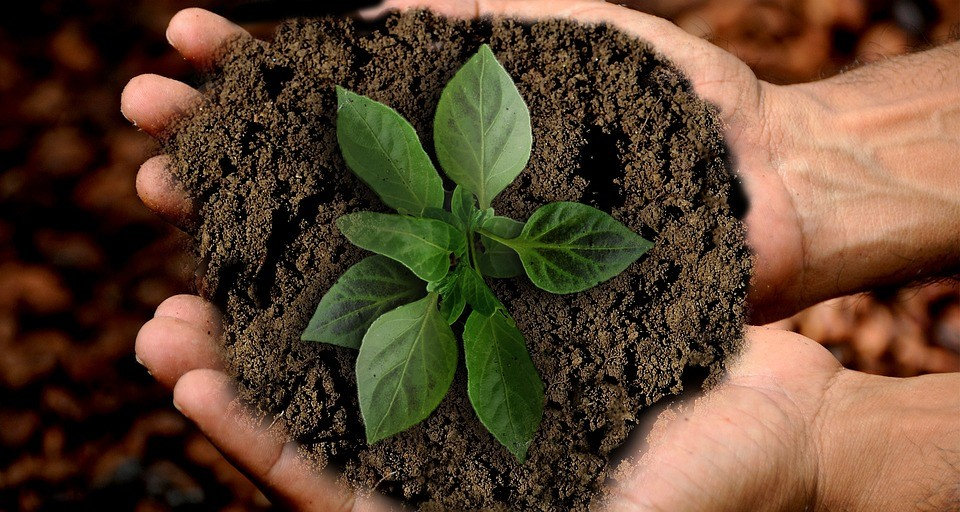
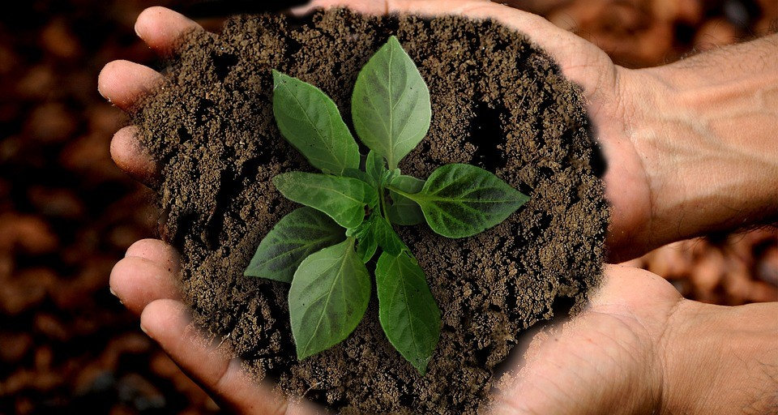

impacto da nossa
acao
+50.000 árvores plantadas
+200 comunidades impactadas
+10.000 pessoas sensibilizadas
+1.000 voluntários ativos
 

Estamos plantando árvores em áreas desmatadas para restaurar a biodiversidade e recuperar nascentes.
Levamos oficinas de reciclagem e reaproveitamento de materiais para escolas e comunidades locais.
Apoiamos iniciativas de limpeza de praias e proteção de tartarugas marinhas ameaçadas de extinção.
+50.000 árvores plantadas
+200 comunidades impactadas
+10.000 pessoas sensibilizadas
+1.000 voluntários ativos
